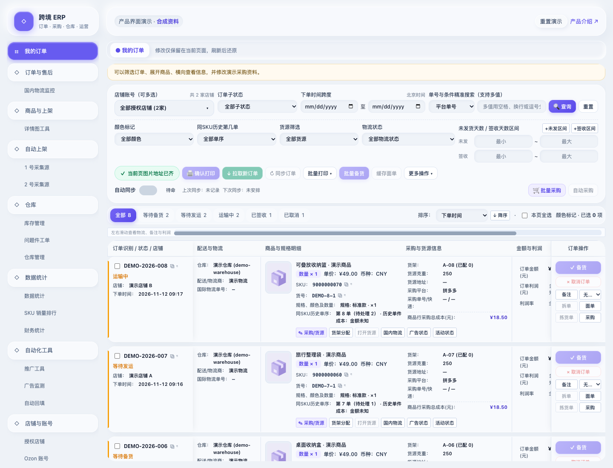

筛选与处理
按店铺、状态与单号查找订单。多商品展开查看，后续信息横向浏览。
面向 Ozon 业务的工作台 · 产品预览
保留日常业务的操作习惯，用清楚的分区和横向信息展示处理复杂订单。每个客户使用独立实例，核心服务与数据由实例管理。
演示仅使用虚构资料，无需登录；不连接店铺、付款或业务服务。

功能范围
按店铺、状态与单号查找订单。多商品展开查看，后续信息横向浏览。
集中维护采购单号、快递、货源和成本。批量处理与逐商品编辑各有入口。
价格表、活动、收藏、物流和广告工具。保留执行记录与未知结果核对。
公开交互演示目前开放订单筛选、商品展开、采购资料编辑和颜色标记。其他模块的完整实机体验在交付验收中逐项确认。
独立部署方案
品牌、域名、账号、店铺资料和工具配对按实例配置。产品修复沿用共同代码，避免每个客户形成永久分叉。
当前处于产品预览和交付验证阶段，尚未开放在线购买或正式交付。Windows 助手、真实平台与客户使用流程需完成对应验证。
查看项目说明与当前范围 ↗